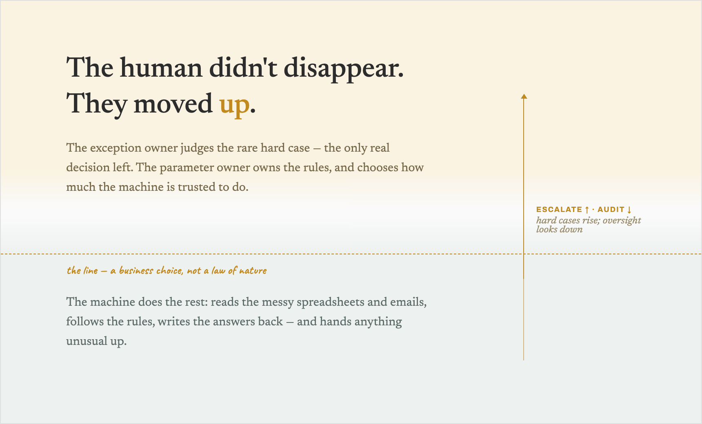

Watch your best operator for an hour. Not the one who takes the hard escalations. The ordinary one, clearing the queue. She opens a ticket, reads it, switches screens to check the booking, copies a figure out of a spreadsheet a colleague maintains by hand, pastes it into the form the billing system understands, writes two lines back to the customer, and closes the case. Then she does it again. Four hundred times a day.
Almost none of that was a decision. It was moving information between systems that do not talk to each other. She is the wire between them.
We call that "her job," and then we say "the agent will do her job." Both halves of that sentence are wrong in the same way. Most of her day is not judgment. It is integration. And integration is exactly what an agent is good at, and exactly what your existing tools never managed to automate.
Automation couldn't touch this, and that's the tell
For twenty years we automated the clean parts. APIs talking to APIs. Scripts. Robotic process automation clicking through fixed screens. The reason a person is still copying a number out of a spreadsheet by hand in 2026 is not that nobody tried to automate it. It is that the interfaces resisted.
A spreadsheet a human edits by hand has no schema you can trust. A legacy screen has no API behind it. A free-text email has no fields. Deterministic tooling needs clean seams, and these seams are semi-human. So the work stayed with a person, because a person was the only thing flexible enough to sit on top of the mess.
That is the tell for where agents actually earn their place. Not the decisions. The seams. An agent can read the messy email, reconcile the hand-kept sheet, and type into the screen that has no API, because it tolerates ambiguity the way a person does. The near-term job of an agent is adapter, not oracle. It is the connective tissue your best people have been supplying by hand, because no software could.
What the agent actually does is compute, not decide
Here is the distinction that dissolves most of the anxiety about "letting AI decide." Take the work the agent absorbs and split it in two.
The plumbing: move and translate data across the messy interfaces. The rule: take the inputs, check the SOP, produce the output the SOP dictates. Input A plus input B, the policy says C, so C.
That second thing looks like a decision. It is not. It is a lookup.
A real decision is the moment someone looks at A and B, sees that the SOP says C, and does something else. "I am not following the process here, because it is the wrong answer for this person." That is the override.
Notice what is true of the override: you cannot write it down in advance. If you could, it would just be another rule, another A plus B equals C, and the agent would do it. The override lives precisely in the space the rules do not cover. That is the same thing the intro called common sense. It is not a better lookup. It is the decision to break the lookup.
The agent computes. The human decides. And "deciding" turns out to be a smaller, sharper act than the word suggested.
So the human doesn't leave. They move up.
This is Conservation of Judgment from the intro, made concrete. The judgment never lived in the plumbing, and it never lived in the rule. It lived in the thin slice on top: the exceptions, the overrides, the cases the SOP gets wrong. When the agent takes the plumbing and the rule, that slice does not disappear.
And a second human appears above her: the one who owns the rules the agent applies, and decides where the agent's authority stops. Hold that thought. It matters more than it looks.
The anatomy
Every human-plus-agent process has the same shape. Once you see it, you see it everywhere.

At the bottom, the agent integrates: it moves data across the messy tools. Above that, it applies the rule: A plus B equals C. Then there is a line. Below the line the agent acts on its own. Above it, a human decides. The line does not separate easy from hard. It separates computing from judging.
Above the line sit two people, never zero. The exception owner stands right at the line. She takes the case the moment it stops being a lookup and becomes an override. She is the only one making a real decision. The parameter owner sits above her. She does not work cases at all. She owns the SOP the agent applies, the thresholds it runs on, and where the line itself is drawn. Move the line down and the agent does more while risk rises. Move it up and humans do more while cost rises. That placement is not a technical setting. It is a business choice, and it is the number this series keeps circling.
Four wires connect the pieces, and they, not the model, are the actual build. Ingest: the agent reads the messy input. Write-back: it commits the action into a system never designed to receive it. Escalate: when a case crosses the line, the agent hands it up and gets an answer back without stalling the queue. Audit: the parameter owner sees what the agent did and moves the line. The model is the cheap part. These four wires are where the work is.
If the anatomy feels familiar, it should. It is the vertical cross-section of a single cell in the matrix from Stop Organizing AI Around Yourselves. That piece put two functions as human across the entire customer journey, never moving: the department's authority layer, and AI oversight. Those are the two people above the line. The exception owner is the authority layer, the judgment only that function can make with credibility. The parameter owner is AI oversight, the person who sets the decision rules and answers for the system when it produces consequential outputs at scale. The map told you those rows never move. The anatomy tells you what they do.
The catch: the plumbing hides judgment too
Here is where the tidy version breaks, and it is worth being honest about it.
I said the plumbing is pure mechanics. Watch the operator again and that is not quite true. When she copies the figure out of the hand-kept spreadsheet, she sometimes notices it looks wrong and quietly fixes it. When she reads the messy email, she catches that the tone is off and flags the account. Those are micro-judgments buried inside what looks like plumbing. Nobody wrote them down, because nobody knew they were there.
Absorb the plumbing blindly and you absorb those silent saves without knowing they existed. The agent will copy the wrong figure without a flicker of doubt, because it never knew a person was catching it. The line between plumbing and judgment is not as clean as the diagram draws it. Some judgment hides below the line, disguised as routine.
That is not a reason to keep humans doing the plumbing. It is a reason to find those buried saves before you automate over them, and to build the escalate wire to catch them.
What comes next
Which raises the question the whole architecture now depends on. If the agent's job is to act below the line and hand up everything above it, how does it know where the line is? How does it know a case has stopped being a lookup and become an override, especially when the dangerous cases are the ones that look most routine?
The obvious answer is "the agent will escalate when it is unsure." That answer is wrong, and the way it is wrong is the most expensive mistake in agentic design.
That is Part 2.